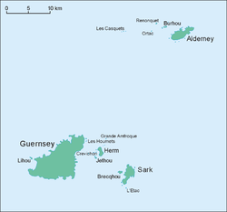

Bailiwick of Guernsey
Bailiwick of Guernsey | |
|---|---|
British Crown Dependency | |
| Anthem: Various: God Save the King and "Sarnia Cherie" | |
Location of Bailiwick of Guernsey (circled) in the English Channel (red) | |
|  Map of the Bailiwick | |
| Sovereign state responsible for the Bailiwick[1][2] | United Kingdom |
| Separation from the Duchy of Normandy | 1204 |
| Largest settlement and administrative centre | St. Peter Port (St. Pierre Port) |
| Official languages | English |
| Recognised national languages | |
| Religion | Church of England |
| Government | |
| Charles III | |
| Richard Cripwell | |
• Bailiff | Sir Richard McMahon |
| Legislature | States of Guernsey |
| Area | |
• Total | 78 km2 (30 sq mi) (223rd) |
• Water (%) | 0 |
| Highest elevation | 374 ft (114 m) |
| Population | |
• 2016 estimate | 67,334[5] (206th) |
• Density | 844/km2 (2,185.9/sq mi) (14th) |
| GDP (PPP) | 2003 estimate |
• Total | $2.1 billion (176th) |
• Per capita | £33,123 (10th) |
| GDP (nominal) | estimate |
• Total | USD 4,513,630,000[6] |
| HDI (2008) | 0.975[7] very high · 9th |
| Currency | Pound sterling Guernsey pound (£) (GBP) |
| Time zone | UTC+00:00 (GMT) |
• Summer (DST) | UTC+01:00 (BST) |
| Date format | dd/mm/yyyy |
| Mains electricity | 230 V–50 Hz |
| Driving side | left |
| Calling code | +44 |
| ISO 3166 code | GG |
| Internet TLD | .gg |
| Jurisdictions | Alderney Guernsey Sark |
{kind=link}
{kind=link}
{kind=link}
{kind=link}
The Bailiwick of Guernsey (French: Bailliage de Guernesey; Guernésiais: Bailliage dé Guernési) is a self-governing British Crown Dependency off the coast of Normandy, France, comprising several of the Channel Islands. It has a total land area of 78 square kilometres (30 sq mi) and an estimated total population of 67,334.
The Channel Islands were part of the Duchy of Normandy, whose dukes became kings of England from 1066. In 1204, as a consequence of the Treaty of Le Goulet, insular Normandy alone remained loyal to the English Crown, leading to a political split from the mainland. Around 1290, the Channel Islands' Governor, Otto de Grandson, split the archipelago into two bailiwicks, establishing those parts other than Jersey as a single Bailiwick of Guernsey.[8]: 21
The Bailiwick is a parliamentary constitutional monarchy, comprising three separate jurisdictions: Alderney, Guernsey (incorporating Herm), and Sark. The Lieutenant Governor is the representative of the British monarch, who remains the head of state. The States of Guernsey is the parliament and government of the whole Bailiwick, though several matters are decided locally by the States of Alderney and by Sark's Chief Pleas. The Bailiff of Guernsey is the civil head of the Bailiwick, and is also president of the States of Guernsey and head of the Bailiwick's judiciary.
The Bailiwick is self-governing and not part of the United Kingdom.[9][10] Its defence and international representation — as well as certain policy areas, such as nationality law — are the responsibility of the UK Government, but the Bailiwick still has a separate international identity.[11]
History
[edit]The history of the Bailiwick of Guernsey goes back to 933, when the islands came under the control of William Longsword, having been annexed from the Duchy of Brittany by the Duchy of Normandy. The island of Guernsey and the other Channel Islands formed part of the lands of William the Conqueror. In 1204, France conquered mainland Normandy – but not the offshore islands of the bailiwick. The islands represent the last remnants of the medieval Duchy of Normandy.[12]
Initially, there was one governor, or co-governors working together, of the islands making up the Channel Islands. The title "governor" has changed over the centuries. "Warden", "keeper", and "captain" have previously been used.[13] The bailiff stands in for the Governor, or more recently the Lieutenant Governor, if the latter is absent, for a short term or for longer: for instance during the five years of the German occupation of the Channel Islands. The Lieutenant Governor of Guernsey is the Lieutenant Governor of the Bailiwick of Guernsey and, being the personal representative of the British monarch,[14] has usually had a distinguished military service.[15]
Originally, the local courts in Guernsey were "fiefs" with the lord of the manor presiding. Before 1066, a superior court was introduced above the fiefs and below the Eschequier Court in Rouen and comprised the bailiff and four knights; the court heard appeals and tried criminal cases.[16]
Otton de Grandson, then the governor of the Islands, delegated the civil powers to two separate bailiffs for Guernsey and Jersey before he went on crusade to the Holy Land in 1290.[8]: 21 This can be assessed as the date of first creation of the two bailiwicks.
Geography
[edit]{kind=link}
Situated around 49°24′N 2°36′W / 49.4°N 2.6°W, Alderney, Guernsey, Herm, Sark, and some other smaller islands together have a total area of 78 km2 (30 sq mi) and coastlines of about 50 km (31 mi). Elevation varies from sea level to 114 m (374 ft) at Le Moulin on Sark.
There are many smaller islands, islets, rocks and reefs in the Bailiwick. Combined with a tidal range of 10 m (33 ft) and fast currents of up to 12 knots (14 mph; 22 km/h), sailing in local waters is dangerous.
Constitutional status
[edit]The Bailiwick of Guernsey is a separate jurisdiction in itself and is, in turn, also three separate sub-jurisdictions. It does not form part of, and is separate from (but is not independent of, or from) the United Kingdom.[17] The two Bailiwicks of Jersey and Guernsey together make up the Channel Islands.
The islanders have never had formal representation in the House of Commons of the British Parliament,[14] nor the European Parliament.[17] Those islanders who were not somehow qualified and eligible in their own right to register to vote and to vote in the United Kingdom under the Representation of the People Acts as "overseas voters", were excluded from the 2016 United Kingdom European Union membership referendum.
Guernsey has an unwritten constitution arising from the Treaty of Paris (1259). When Henry III and the King of France came to terms over the Duchy of Normandy, the Norman mainland fell under the suzerainty of the king of France. The Channel Islands, however, remained loyal to the British crown due to the loyalties of its Seigneurs. However, they were never absorbed into the Kingdom of England by any Act of Union, but exist as "peculiars of the Crown".
A unique constitutional position has arisen as successive British monarchs have confirmed the liberties and privileges of the Bailiwick, often referring to the so-called Constitutions of King John, a legendary document supposed to have been granted by King John in the aftermath of 1204. Governments of the Bailiwick have generally tried to avoid testing the limits of the unwritten constitution by avoiding conflict with British governments.
This peculiar political position has often been to the benefit of islanders. Until the 19th century, the Bailiwick was generally exempt from the harsher parts of Westminster legislation while being included in favourable policies, such as protectionist economic policies. England, and later the United Kingdom, passively exploited the strategic benefits of the Channel Islands. For example, the islands were a convenient stop-off point for trade to Gascony.[18]
Parishes
[edit]The bailiwick comprises twelve parishes: Alderney, Sark, and ten on mainland Guernsey (one of which includes Herm). Each parish has a parish church dating from the 11th century, with strong religious control exercised initially by the French Catholic church and for the last 500 years by the English church. Over the years, the religious aspect of the administration of each parish has been reduced in favour of democratically elected douzeniers.
Jurisdictions
[edit]Each jurisdiction has inhabited and uninhabited islands and its own elected government. All three legal jurisdictions need royal assent from the Monarch on its primary legislation, but as of February 29, 2024, certain domestic primary legislation need only the Lieutenant-Governor's assent. Each jurisdiction raises its own taxation,[14] although in 1949 Alderney transferred its rights to Guernsey.
Alderney
[edit]With a population of around 2,200 in 7.8 km2 (3 square miles), Alderney has its own parliament, the States of Alderney, which has ten elected members and an elected president.[19]
From 1612, Alderney had a judge appointed, with similar judicial powers to a bailiff, but on 1 January 1949, the island adopted a new constitution, giving up some independence, moving closer to Guernsey, and confirming that it is part of the Bailiwick of Guernsey.[citation needed]
Guernsey
[edit]The island of Guernsey has a population of around 63,000 in 62 km2 (24 square miles) and forms the legal and administrative centre of the Bailiwick of Guernsey. The parliament of Guernsey and the nearby inhabited islands of Herm, Jethou and Lihou[14] is the States of Guernsey.[19]
Sark
[edit]Sark has a population of around 600 who live in 5.2 km2 (2 square miles). Its parliament (together with the inhabited island of Brecqhou)[14] is the Chief Pleas of Sark, with 18 elected members.[19]
In 1565, Helier de Carteret, Seigneur of St. Ouen in Jersey, was granted the fief of Sark by Queen Elizabeth I. He received letters patent granting him Sark in perpetuity on condition that he kept the island free of pirates and that at least forty men occupied it to defend it. Despite most families coming from Jersey, Sark remained within the Bailiwick of Guernsey.[20]
Recognition
[edit]{kind=link}
There is no flag or coat of arms for the Bailiwick of Guernsey. In historic times, the governor would have used his personal symbols before a generic flag was created for use by the governor.
In 1279, Edward I granted a Seal for use in the Channel Islands. In 1304, separate seals were provided to Jersey and Guernsey. The provision of different seals is one of the earliest indications of the individual identity and personality of the two Bailiwicks. The seal comprised three leopards (or lions), a symbol taken from the original arms of the Duchy of Normandy.[21]
The United Kingdom and His Majesty's Government in the United Kingdom are responsible for the defence and also for formal international, intergovernmental, and consular representation of, and the foreign affairs generally, of the Bailiwick.[14]
While never a member of the European Union or its predecessors, before Brexit the Bailiwick had a special relationship with the EU under Protocol 3 of the UK's Treaty of Accession 1972 to the European Community.[14] Pooling resources with Jersey, the Bailiwick established in 2010 an office in Brussels to develop the Channel Islands' influence with the EU,[22] to advise the Channel Islands' governments on European matters, and to promote economic links with the EU.[23]
The Bailiwick of Guernsey is in the Commonwealth (Commonwealth of Nations), although not as a member, in its own right. The Bailiwick is also a member of the Commonwealth Games Federation and competes in the Commonwealth Games.[24]
In 1969, Royal Mail relinquished control of postal services in the Bailiwick,[25] with Guernsey then being recognised by the Universal Postal Union.[citation needed]
Since 1999, the Bailiwick of Guernsey has been a member of the British–Irish Council, currently represented by the Chief Minister of Guernsey.
References
[edit]- ^ Fact sheet on the UK's relationship with the Crown Dependencies (PDF), UK Ministry of Justice, retrieved 2 May 2023,
The Crown Dependencies are not recognised internationally as sovereign States in their own right but as "territories for which the United Kingdom is responsible".
- ^ Framework for developing the international identity of Guernsey, States of Guernsey, retrieved 2 May 2023,
2. Guernsey has an international identity which is different from that of the UK.
- ^ The Queen: Elizabeth II and the Monarchy, p. 314, at Google Books
- ^ The Channel Islands, p. 11, at Google Books
- ^ "Guernsey - The World Factbook". www.cia.gov. 14 November 2022.
- ^ "About the Bailiwick of Guernsey". Channel Islands Brussels Office (CIBO). 15 September 2019. Retrieved 9 August 2021.
- ^ Filling Gaps in the Human Development Index Archived 2011-10-05 at the Wayback Machine, United Nations ESCAP, February 2009
- ^ a b Wimbush, Henry (1904). The Channel Islands. A&C Black 1924.
- ^ Mut Bosque, Maria (May 2020). "The sovereignty of the British Crown Dependencies and the British Overseas Territories in the Brexit era". Island Studies Journal. 15 (1): 151–168. doi:10.24043/isj.114.
- ^ Committee, European Union (23 March 2017). Brexit: the British Crown Dependencies (PDF) (Report). House of Lords. Archived from the original (PDF) on 27 April 2021. Retrieved 6 May 2021. (Summary, first sentence; Paragraph 4)
- ^ Torrance, David (20 June 2022). The Crown Dependencies (PDF) (Report). House of Commons Research Library. Retrieved 16 November 2022.
- ^ Marr, J., The History of Guernsey – the Bailiwick's story, Guernsey Press (2001).
- ^ Berry, William. The History of the Island of Guernsey. Longman, Hurst, Rees, Orme, and Brown, 1815. p. 213.
- ^ a b c d e f g "Background briefing on the Crown Dependencies: Jersey, Guernsey and the Isle of Man" (PDF). Ministry of Justice. Archived from the original (PDF) on 9 July 2021. Retrieved 20 January 2016.
- ^ "Lieutenant Governors". Guernsey Royal Court. 29 April 2021.
- ^ Berry, William. The History of the Island of Guernsey. Longman, Hurst, Rees, Orme, and Brown, 1815. p. 186.
- ^ a b "Background information on the Bailiwick of Guernsey". Guernsey gov. Archived from the original on 15 February 2016.
- ^ Kelleher, John D. (1991). The rural community in nineteenth century Jersey (Thesis). S.l.: typescript.
- ^ a b c "About the Bailiwick of Guernsey". Channel Islands Brussels Office. 15 September 2019.
- ^ "Jersey Post celebrates the island of Sark". Sepac.
- ^ "Bailiwick Seal". Guernsey Royal Court. 22 June 2011.
- ^ "Channel Islands Brussels Office".
- ^ "Guernsey and Jersey begin recruiting for senior Brussels positions" (PDF). Retrieved 4 October 2012.
- ^ "Guernsey". Commonwealth Games Federation. Archived from the original on 8 August 2014. Retrieved 20 January 2016.
- ^ Stanley Gibbons Stamp Catalogue: Commonwealth and British Empire Stamps 1840–1970. 112th edition. London: Stanley Gibbons, 2010, p. GB31. ISBN 0852597312
| International | |
|---|---|
| National | |
| Geographic | |
| People | |
| Other | |